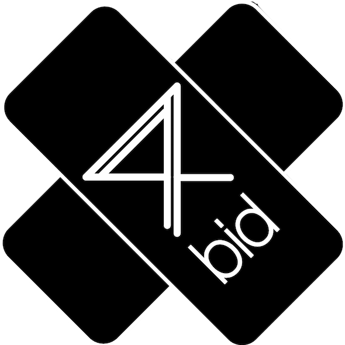
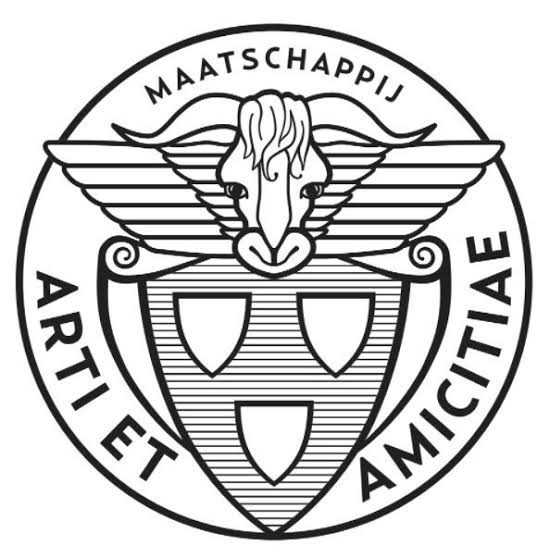
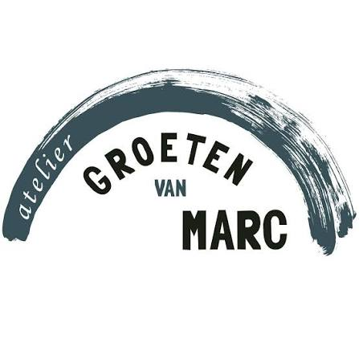
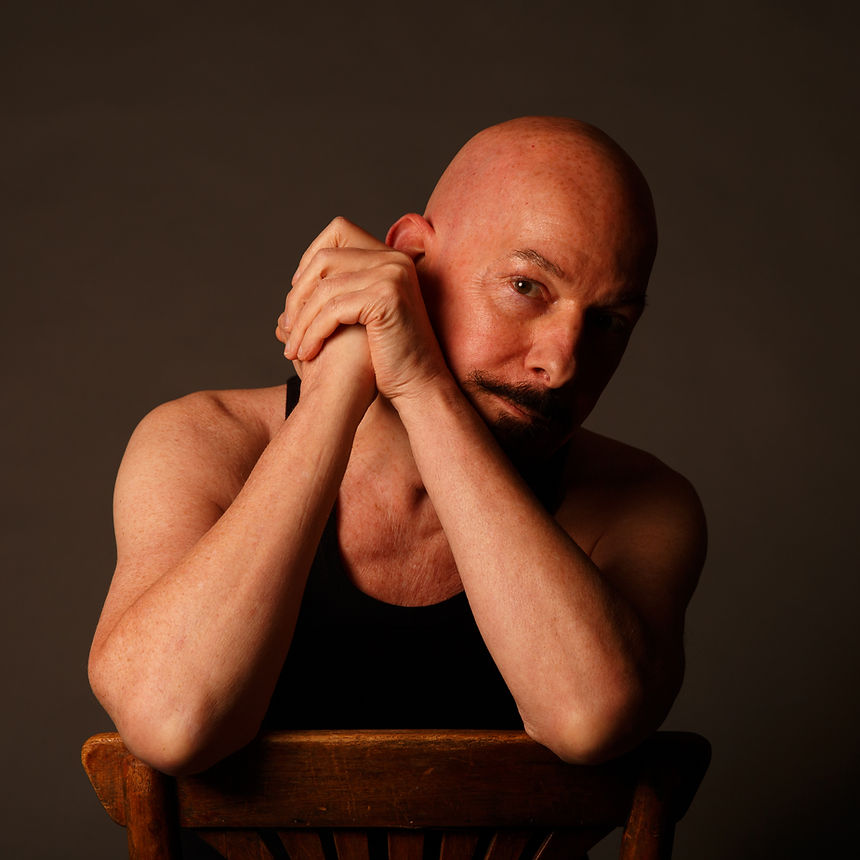
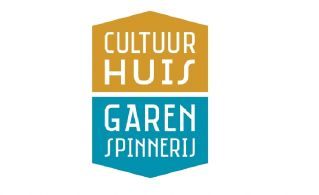

4bid Gallery
Overtoom 301, Amsterdam

Arti et Amicitiae
Rokin 112, Amsterdam

Atelier Groeten van Marc
Willem Schoutenstraat 21, Amsterdam

Bastiaan Mol
Rotterdam

Cultuurhuis Garenspinnerij
Turfsingel 34, Gouda
Dutch Atelier of Realist Art
Zuider Emmakade 45F, Haarlem
Figura
Chasséstraat 91, Amsterdam
Jaap de Jonge Photography
Amsterdam

MK Atelier
Amsterdam

SAKB
Ouderkerkerlaan 15, Amstelveen

Tetterode
Bilderdijkstraat 165, Amsterdam

Wackers Academie
Eerste Helmersstraat 271, Amsterdam

Zaal 100
De Wittenstraat 100, Amsterdam